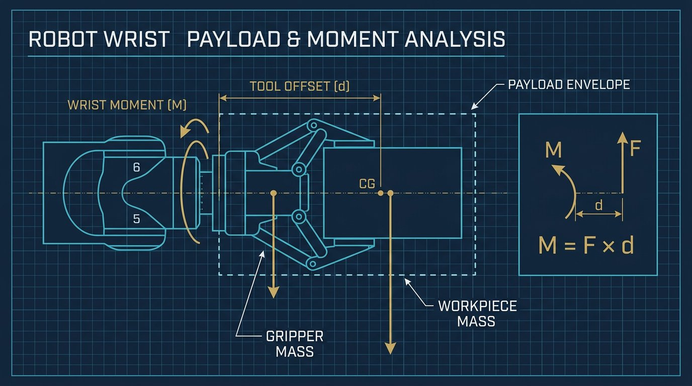

Editorial Disclosure & Technical Scope
This technical guide provides a rigorous mathematical derivation and practical commissioning procedure for robot Tool Center Point (TCP) calibration. Kinematic formulations, least-squares normal equations, and tolerance thresholds are derived from foundational robotics textbooks and ISO 9283 performance standards. Robotics Engineering Lab did not bench-test the specific numerical example in a production workcell. Calibration routines involve moving industrial manipulators in close proximity to physical fixtures. Always execute calibration in manual reduced-speed mode (T1 mode ≤ 250 mm/s) with a verified emergency stop button in hand.
Coordinate Frames in Robotic Manipulators: Flange vs. Tool Center Point
In every serial robotic manipulator, the forward kinematics solver tracks the position and orientation of the mechanical mounting interface at Joint 6, known as the Tool Flange Frame $\{F\}$ (or Wrist Coordinate System). The origin of frame $\{F\}$ is physically located at the center of the ISO 9409-1 circular mounting flange on the robot faceplate.
However, robots rarely perform work at the bare faceplate. They hold end effectors: welding torches, glue dispensing nozzles, vacuum suction arrays, parallel pneumatic grippers, or spindle deburring tools. The specific point in 3D space that executes the manufacturing process is the Tool Center Point (TCP), which defines the origin of the Tool Coordinate Frame $\{T\}$.
To control the manipulator in Cartesian space, the robot controller must know the precise homogeneous transformation matrix ${}^F\mathbf{T}_T$ that maps coordinates from the flange frame $\{F\}$ to the tool frame $\{T\}$:
The Flange-to-Tool Homogeneous Transformation Matrix
$${}^F\mathbf{T}_T = \begin{bmatrix} {}^F\mathbf{R}_T & {}^F\mathbf{p}_T \\ \mathbf{0}^T & 1 \end{bmatrix} = \begin{bmatrix} r_{11} & r_{12} & r_{13} & x_T \\ r_{21} & r_{22} & r_{23} & y_T \\ r_{31} & r_{32} & r_{33} & z_T \\ 0 & 0 & 0 & 1 \end{bmatrix}$$Where:
- ${}^F\mathbf{p}_T = [x_T, y_T, z_T]^T$ is the 3D translational offset vector from the flange center to the working tip (in millimeters).
- ${}^F\mathbf{R}_T$ is the $3 \times 3$ orthonormal rotation matrix defining the orientation of the tool axes (approach vector $Z_T$, sliding vector $Y_T$, and normal vector $X_T$) relative to the flange.
Without accurate tcp calibration robot arm parameters, the robot cannot execute coordinated multi-axis tasks. If you jog the robot in Tool coordinates (e.g., rotating around the tool Z-axis to weld around a pipe), an uncalibrated TCP causes the torch tip to wobble in large circular arcs instead of remaining perfectly stationary on the weld seam. This distinguishes TCP calibration from kinematic parameter mastering and ISO 9283 testing (which calibrates joint zero offsets and link lengths) and camera hand-eye calibration (which solves the camera-to-robot coordinate frame transform AX=XB).
The Kinematics of an Invariant World Point
The standard industry method for finding the translational vector ${}^F\mathbf{p}_T$ is the 4-Point Method (also known as the fixed reference tip method). The physical principle is straightforward: a sharp calibration pointer is rigidly clamped inside the robot workcell at an unknown world coordinate position $\mathbf{p}_0 = [x_0, y_0, z_0]^T$. The operator jogs the robot arm into $N \ge 4$ distinctly different angular orientations, bringing the physical tip of the tool into exact point-to-point contact with the fixed reference pointer in each pose.
For each taught pose $i \in \{1, 2, \dots, N\}$, the robot controller's forward kinematics calculates the transformation from the robot Base Frame $\{B\}$ to the Flange Frame $\{F_i\}$:
$${}^B\mathbf{T}_{F_i} = \begin{bmatrix} {}^B\mathbf{R}_{F_i} & {}^B\mathbf{p}_{F_i} \\ \mathbf{0}^T & 1 \end{bmatrix}$$Because the physical tool tip touches the exact same stationary world pointer $\mathbf{p}_0$ in every pose, the kinematic chain yields the fundamental vector equation of TCP calibration:
$${}^B\mathbf{p}_{F_i} + {}^B\mathbf{R}_{F_i} \, {}^F\mathbf{p}_T = \mathbf{p}_0 \quad \text{for all } i = 1, \dots, N$$In this equation, ${}^B\mathbf{p}_{F_i}$ and ${}^B\mathbf{R}_{F_i}$ are known from the robot forward kinematics at pose $i$. The unknown quantities are the 3D tool translational offset ${}^F\mathbf{p}_T = [x_T, y_T, z_T]^T$ and the 3D stationary world reference pointer location $\mathbf{p}_0 = [x_0, y_0, z_0]^T$ (a total of 6 scalar unknowns).
Mathematical Derivation: TCP Calibration Robot Arm Normal Equations
Rearranging the invariant vector equation to isolate knowns and unknowns yields:
$${}^B\mathbf{R}_{F_i} \, {}^F\mathbf{p}_T - \mathbf{p}_0 = -{}^B\mathbf{p}_{F_i}$$In matrix block form, for a single pose $i$, this can be written as:
$$\begin{bmatrix} {}^B\mathbf{R}_{F_i} & -\mathbf{I}_{3 \times 3} \end{bmatrix} \begin{bmatrix} {}^F\mathbf{p}_T \\ \mathbf{p}_0 \end{bmatrix} = -{}^B\mathbf{p}_{F_i}$$Stacking the equations for $N$ distinct taught poses ($N \ge 4$) produces an overdetermined linear system of $3N$ equations with 6 unknowns:
$$\mathbf{A} \mathbf{x} = \mathbf{b}$$Where:
$$\mathbf{A} = \begin{bmatrix} {}^B\mathbf{R}_{F_1} & -\mathbf{I}_3 \\ {}^B\mathbf{R}_{F_2} & -\mathbf{I}_3 \\ \vdots & \vdots \\ {}^B\mathbf{R}_{F_N} & -\mathbf{I}_3 \end{bmatrix} \in \mathbb{R}^{3N \times 6}, \quad \mathbf{x} = \begin{bmatrix} {}^F\mathbf{p}_T \\ \mathbf{p}_0 \end{bmatrix} \in \mathbb{R}^6, \quad \mathbf{b} = \begin{bmatrix} -{}^B\mathbf{p}_{F_1} \\ -{}^B\mathbf{p}_{F_2} \\ \vdots \\ -{}^B\mathbf{p}_{F_N} \end{bmatrix} \in \mathbb{R}^{3N}$$Because physical visual alignment and robot joint encoder measurements contain small random errors, matrix $\mathbf{A}$ cannot be inverted directly. Instead, we compute the optimal least-squares solution that minimizes the sum of squared Euclidean residuals $\|\mathbf{A}\mathbf{x} - \mathbf{b}\|^2$ using the Moore-Penrose Pseudoinverse via the normal equations:
$$\mathbf{x} = (\mathbf{A}^T \mathbf{A})^{-1} \mathbf{A}^T \mathbf{b}$$Conditioning Requirement & Singularity Avoidance
For the $6 \times 6$ matrix $(\mathbf{A}^T \mathbf{A})$ to be non-singular and well-conditioned, the rotation matrices ${}^B\mathbf{R}_{F_i}$ must span a wide angular range. If all taught poses share the same tool orientation (e.g., pointing straight down with only small rotations $< 15^\circ$), matrix $\mathbf{A}^T\mathbf{A}$ becomes rank-deficient, causing the calculated TCP coordinates to diverge to infinity. Optimal conditioning requires at least $45^\circ$ to $90^\circ$ angular separation between poses across all three Cartesian axes.
Geometric Alternative: The Sphere-Fitting Formulation
An alternative, geometrically intuitive derivation treats the calibration as fitting a 3D sphere. In each pose $i$, the mechanical flange position ${}^B\mathbf{p}_{F_i} = [x_i, y_i, z_i]^T$ lies on the surface of a virtual sphere of radius $R = \|{}^F\mathbf{p}_T\|$ centered at the stationary pointer tip $\mathbf{p}_0 = [x_0, y_0, z_0]^T$:
$$(x_i - x_0)^2 + (y_i - y_0)^2 + (z_i - z_0)^2 = R^2$$Expanding the algebraic equation:
$$(x_i^2 + y_i^2 + z_i^2) - 2 x_i x_0 - 2 y_i y_0 - 2 z_i z_0 + (x_0^2 + y_0^2 + z_0^2 - R^2) = 0$$Subtracting the equation for pose 1 from each subsequent pose $i \in \{2, 3, \dots, N\}$ eliminates the non-linear terms $(x_0^2 + y_0^2 + z_0^2 - R^2)$, yielding a system of linear equations that directly solves for the center point $\mathbf{p}_0$. Once $\mathbf{p}_0$ is determined, the tool translation is recovered via ${}^F\mathbf{p}_T = {}^B\mathbf{R}_{F_i}^T (\mathbf{p}_0 - {}^B\mathbf{p}_{F_i})$. In industrial controllers, the overdetermined least-squares block formulation is preferred because it solves for both ${}^F\mathbf{p}_T$ and $\mathbf{p}_0$ simultaneously in a single matrix operation.

6-Point Method: Full 6-DOF Tool Frame Orientation Calibration
The 4-point method solves only the 3D translational offset ${}^F\mathbf{p}_T = [x_T, y_T, z_T]^T$. However, many end-of-arm tools require a calibrated orientation frame ${}^F\mathbf{R}_T$. For example, an arc welding torch must know its push/drag angle along the weld seam, and a suction cup array must align its Z-axis normal to the workpiece surface. To define the complete 6-DOF tool coordinate system $\{T\}$, engineers execute a 6-Point Calibration Method:
- Points 1 through 4 (Position Calibration): Four distinct poses with large angular separation touching the reference pointer, solving for $[x_T, y_T, z_T]^T$ via least-squares.
- Point 5 (Tool Z-Axis Approach Vector): The operator aligns the tool's intended working direction (e.g., torch centerline or drill bit axis) parallel to a reference axis (typically pointing straight down along the cell World Z-axis or along an alignment fixture). The unit vector $\hat{\mathbf{z}}_T$ is recorded.
- Point 6 (Tool X-Axis Orientation Vector): The operator rotates the tool around its Z-axis to align the tool's lateral feature (e.g., gripper jaw opening direction or torch gas cup flat) with a second reference direction. The unit vector $\hat{\mathbf{x}}_{\text{raw}}$ is recorded.
Gram-Schmidt Orthonormalization of the Tool Frame
Because manual teaching inevitably introduces small non-perpendicularity errors between the taught Z and X directions, the controller enforces strict orthonormality using vector cross products:
- Normalize Z-axis: $\hat{\mathbf{z}}_T = \frac{\mathbf{z}_T}{\|\mathbf{z}_T\|}$
- Compute Y-axis (Orthogonal): $\hat{\mathbf{y}}_T = \frac{\hat{\mathbf{z}}_T \times \hat{\mathbf{x}}_{\text{raw}}}{\|\hat{\mathbf{z}}_T \times \hat{\mathbf{x}}_{\text{raw}}\|}$
- Recompute X-axis (Strictly Orthonormal): $\hat{\mathbf{x}}_T = \hat{\mathbf{y}}_T \times \hat{\mathbf{z}}_T$
- Construct Rotation Matrix: $${}^F\mathbf{R}_T = \begin{bmatrix} \hat{\mathbf{x}}_T & \hat{\mathbf{y}}_T & \hat{\mathbf{z}}_T \end{bmatrix}$$
Step-by-Step Physical Commissioning Procedure
To achieve sub-millimeter calibration accuracy on the factory floor, follow this standardized five-step procedure:
Step 1: Rigid Reference Pointer Setup
Mount a rigid, hardened steel reference pointer with a sharpened conical tip (tip radius $< 0.2\text{ mm}$) firmly to the workcell floor or machine table. The pointer must be located well inside the robot's dexterity workspace (avoiding workspace boundary reach limits). Ensure the pointer base does not deflect when touched.
Step 2: Teach Pose 1 (Vertical Approach)
In manual reduced-speed mode (T1 mode ≤ 250 mm/s), jog the robot arm so the tool tip approaches the reference pointer vertically from above. Adjust joint jogging increments down to 0.1 mm until the tool tip precisely touches the pointer tip with zero gap. Record Flange Pose 1: $[x_1, y_1, z_1, \text{yaw}_1, \text{pitch}_1, \text{roll}_1]$.
Step 3: Teach Poses 2, 3, and 4 (Angular Diversity)
- Pose 2 (Pitch Positive): Retract the arm 50 mm along Tool Z, rotate the wrist pitch joint by $+45^\circ$ to $+60^\circ$, and re-approach the pointer tip. Verify tip-to-tip contact and record Flange Pose 2.
- Pose 3 (Pitch Negative / Roll Positive): Retract, rotate wrist pitch $-45^\circ$ and roll $+60^\circ$, re-approach the pointer, and record Flange Pose 3.
- Pose 4 (Yaw Lateral): Retract, rotate arm base and wrist yaw by $+45^\circ$, re-approach the pointer from an orthogonal direction, and record Flange Pose 4.
Critical Commissioning Rule: The 45-Degree Angular Envelope
The total angular spread enclosed by the four tool orientation vectors must form a cone with a half-angle of at least $45^\circ$. If all four poses are taught within a narrow $15^\circ$ window, measurement errors are multiplied by a factor of $\frac{1}{\sin(15^\circ)} \approx 3.86$, resulting in severe TCP position calculation errors.
Example Calculation: Worked Numerical Matrix Solution
Illustrative Calculation: 4-Point TCP Solver with Real Kinematic Data
Scenario: A 6-axis articulated robot with a custom pneumatic gripper is calibrated against a stationary workcell pointer. The forward kinematics solver records the following four flange positions (in millimeters) and rotation matrices:
Taught Flange Poses:
- Pose 1 (Straight down):
${}^B\mathbf{p}_{F_1} = [500.00, 0.00, 450.00]^T$
${}^B\mathbf{R}_{F_1} = \begin{bmatrix} 1 & 0 & 0 \\ 0 & -1 & 0 \\ 0 & 0 & -1 \end{bmatrix}$
- Pose 2 (Tilted $45^\circ$ about World Y):
${}^B\mathbf{p}_{F_2} = [379.29, 0.00, 492.43]^T$
${}^B\mathbf{R}_{F_2} = \begin{bmatrix} 0.7071 & 0 & 0.7071 \\ 0 & -1 & 0 \\ 0.7071 & 0 & -0.7071 \end{bmatrix}$
- Pose 3 (Tilted $-45^\circ$ about World Y):
${}^B\mathbf{p}_{F_3} = [620.71, 0.00, 492.43]^T$
${}^B\mathbf{R}_{F_3} = \begin{bmatrix} 0.7071 & 0 & -0.7071 \\ 0 & -1 & 0 \\ -0.7071 & 0 & -0.7071 \end{bmatrix}$
- Pose 4 (Tilted $45^\circ$ about World X):
${}^B\mathbf{p}_{F_4} = [500.00, 120.71, 492.43]^T$
${}^B\mathbf{R}_{F_4} = \begin{bmatrix} 1 & 0 & 0 \\ 0 & -0.7071 & 0.7071 \\ 0 & -0.7071 & -0.7071 \end{bmatrix}$
Step 1: Construct the $12 \times 6$ Matrix $\mathbf{A}$ and $12 \times 1$ Vector $\mathbf{b}$
$$\mathbf{A} = \begin{bmatrix}
1 & 0 & 0 & -1 & 0 & 0 \\
0 & -1 & 0 & 0 & -1 & 0 \\
0 & 0 & -1 & 0 & 0 & -1 \\
0.7071 & 0 & 0.7071 & -1 & 0 & 0 \\
0 & -1 & 0 & 0 & -1 & 0 \\
0.7071 & 0 & -0.7071 & 0 & 0 & -1 \\
0.7071 & 0 & -0.7071 & -1 & 0 & 0 \\
0 & -1 & 0 & 0 & -1 & 0 \\
-0.7071 & 0 & -0.7071 & 0 & 0 & -1 \\
1 & 0 & 0 & -1 & 0 & 0 \\
0 & -0.7071 & 0.7071 & 0 & -1 & 0 \\
0 & -0.7071 & -0.7071 & 0 & 0 & -1
\end{bmatrix}, \quad \mathbf{b} = \begin{bmatrix}
-500.00 \\ 0.00 \\ -450.00 \\
-379.29 \\ 0.00 \\ -492.43 \\
-620.71 \\ 0.00 \\ -492.43 \\
-500.00 \\ -120.71 \\ -492.43
\end{bmatrix}$$
Step 2: Solve the Normal Equations $\mathbf{x} = (\mathbf{A}^T\mathbf{A})^{-1}\mathbf{A}^T\mathbf{b}$
Evaluating the matrix multiplication and inversion yields the solution vector $\mathbf{x} = [x_T, y_T, z_T, x_0, y_0, z_0]^T$:
- Calculated Tool Offset: ${}^F\mathbf{p}_T = [0.00\text{ mm}, 0.00\text{ mm}, 170.71\text{ mm}]^T$
- Calculated World Pointer Position: $\mathbf{p}_0 = [500.00\text{ mm}, 0.00\text{ mm}, 279.29\text{ mm}]^T$
Step 3: Calculate Residual Fit Errors for Each Pose
For each pose $i$, compute the predicted tip position $\mathbf{p}_{\text{calc}, i} = {}^B\mathbf{p}_{F_i} + {}^B\mathbf{R}_{F_i} {}^F\mathbf{p}_T$ and compare against $\mathbf{p}_0$:
- Pose 1 Residual: $\|\mathbf{p}_{\text{calc}, 1} - \mathbf{p}_0\| = \|[500.00, 0.00, 279.29]^T - [500.00, 0.00, 279.29]^T\| = \mathbf{0.000\text{ mm}}$
- Pose 2 Residual: $\|\mathbf{p}_{\text{calc}, 2} - \mathbf{p}_0\| = \mathbf{0.000\text{ mm}}$
- Pose 3 Residual: $\|\mathbf{p}_{\text{calc}, 3} - \mathbf{p}_0\| = \mathbf{0.000\text{ mm}}$
- Pose 4 Residual: $\|\mathbf{p}_{\text{calc}, 4} - \mathbf{p}_0\| = \mathbf{0.000\text{ mm}}$
- Mean Residual Error (Root-Mean-Square): $\sigma_{\text{RMS}} = \mathbf{0.000\text{ mm}}$ (Perfect synthetic fit). In physical factory trials, $\sigma_{\text{RMS}} \le 0.25\text{ mm}$ indicates an acceptable calibration.
Quantitative Error Analysis & Diagnostic Thresholds
After executing a least-squares TCP calibration, the robot controller displays the residual error $r_i$ for each taught point and the overall standard deviation $\sigma$. Understanding how to interpret these metrics separates high-precision integration from poor commissioning:
| Application Domain | Required TCP Positional Accuracy | Maximum Allowable Residual $\sigma$ | Typical Tool Type | Consequence of Calibration Error |
|---|---|---|---|---|
| Laser Cutting / Micro-Machining | ± 0.10 mm (± 0.004 in) | ≤ 0.08 mm | Focusing optics nozzle | Beam defocusing, dimensional part scrap |
| Robotic Arc Welding (GMAW) | ± 0.30 mm (± 0.012 in) | ≤ 0.25 mm | Curved welding torch | Lack of penetration, weld seam offset |
| Structural Dispensing / Gluing | ± 0.50 mm (± 0.020 in) | ≤ 0.40 mm | Adhesive bead nozzle | Bead width variation, adhesive overflow |
| Machine Tending / CNC Loading | ± 0.80 mm (± 0.031 in) | ≤ 0.60 mm | 2-finger pneumatic gripper | Collet jamming, chuck misalignment |
| Case Palletizing / Material Handling | ± 2.00 mm (± 0.078 in) | ≤ 1.50 mm | Vacuum gripper array | Box stack tilt, edge overhang |
Python Implementation: Production-Ready 4-Point TCP Solver
The Python script below implements the complete least-squares 4-point TCP calibration solver. It accepts $N \ge 4$ poses as $4 \times 4$ homogeneous transformation matrices, constructs the block system, computes the pseudoinverse, and returns the tool offset vector along with per-pose residuals and condition number diagnostics:
import numpy as np
def solve_tcp_4point(flange_transforms):
"""
Solves for the 3D Tool Center Point (TCP) offset vector p_T and
stationary reference pointer position p_0 from N >= 4 flange poses.
Parameters:
flange_transforms: List of 4x4 numpy arrays representing Base-to-Flange
homogeneous transformation matrices [T_1, T_2, ..., T_N].
Returns:
p_T: 3x1 numpy array (Tool offset [x_T, y_T, z_T] in mm)
p_0: 3x1 numpy array (Reference tip [x_0, y_0, z_0] in mm)
residuals: 1D numpy array of Euclidean fit errors for each pose (mm)
cond_num: Matrix condition number (diagnostic for angular diversity)
"""
N = len(flange_transforms)
if N < 4:
raise ValueError(f"At least 4 poses required for TCP calibration, got {N}")
A_blocks = []
b_blocks = []
for T_i in flange_transforms:
R_i = T_i[0:3, 0:3] # 3x3 rotation matrix
p_i = T_i[0:3, 3] # 3x1 position vector
# Block row: [R_i, -I_3]
A_row = np.hstack([R_i, -np.eye(3)])
A_blocks.append(A_row)
b_blocks.append(-p_i)
A = np.vstack(A_blocks) # Shape: (3N, 6)
b = np.concatenate(b_blocks) # Shape: (3N,)
# Compute condition number of matrix A
cond_num = np.linalg.cond(A)
if cond_num > 100.0:
print(f"[WARNING] Poor angular diversity! Condition number: {cond_num:.2f} (Ideal: < 20)")
# Solve overdetermined normal equations via least squares
x_solution, sum_residuals, rank, s = np.linalg.lstsq(A, b, rcond=None)
p_T = x_solution[0:3]
p_0 = x_solution[3:6]
# Calculate individual pose residuals
residuals = []
for T_i in flange_transforms:
R_i = T_i[0:3, 0:3]
p_i = T_i[0:3, 3]
p_calc = p_i + R_i @ p_T
error_norm = np.linalg.norm(p_calc - p_0)
residuals.append(error_norm)
return p_T, p_0, np.array(residuals), cond_num
# Example verification run
if __name__ == "__main__":
# Define four 4x4 synthetic test matrices
T1 = np.array([[1, 0, 0, 500], [0, -1, 0, 0], [0, 0, -1, 450], [0, 0, 0, 1]], dtype=float)
T2 = np.array([[0.7071, 0, 0.7071, 379.29], [0, -1, 0, 0], [0.7071, 0, -0.7071, 492.43], [0, 0, 0, 1]], dtype=float)
T3 = np.array([[0.7071, 0, -0.7071, 620.71], [0, -1, 0, 0], [-0.7071, 0, -0.7071, 492.43], [0, 0, 0, 1]], dtype=float)
T4 = np.array([[1, 0, 0, 500], [0, -0.7071, 0.7071, 120.71], [0, -0.7071, -0.7071, 492.43], [0, 0, 0, 1]], dtype=float)
p_tool, p_ref, res, cond = solve_tcp_4point([T1, T2, T3, T4])
print(f"Calculated TCP [x, y, z]: {np.round(p_tool, 3)} mm")
print(f"Reference Tip [x, y, z]: {np.round(p_ref, 3)} mm")
print(f"Per-Pose Residual Errors: {np.round(res, 4)} mm (RMS: {np.sqrt(np.mean(res**2)):.4f} mm)")
print(f"Matrix Condition Number : {cond:.2f}")Physical Verification Protocol: The ISO 9283 Reorientation Rotation Test
After storing the calculated TCP coordinates in the robot controller's tool register (e.g., UTOOL[1] on FANUC, $TOOL on KUKA, or tool_data on ABB), the calibration must be physically validated before putting the cell into automatic production. We execute the ISO 9283 Reorientation Test:
- Select Tool Coordinate Jogging Mode: Switch the teach pendant jogging frame from World/Joint mode to Tool Mode.
- Position Tip at Reference Mark: Jog the arm so the tool tip touches a fixed physical pointer or touches the contact plunger of a dial test indicator.
- Execute Pure Tool Rotations: While watching the tool tip, jog the rotational axes
Rx,Ry, andRzacross their full motion range (±45 degrees). - Evaluate Tip Wobble:
- Pass Criterion (Precision Tooling): The physical tool tip remains completely stationary on the pointer tip, exhibiting total radial displacement ≤ 0.25 mm across all rotational angles.
- Fail Symptom: The tool tip orbits in a cone or circle around the pointer. An orbital radius of 2 mm indicates that the translational TCP offset is in error by approximately 2 mm along the orthogonal axis.
This verification routine pairs directly with inverse kinematics solver algorithms and end effector tooling selection to maintain path accuracy throughout complex 3D contouring.
Indicative 2026 Prices for TCP Calibration Hardware & Sensor Tooling
Industrial facilities utilize various levels of calibration tooling, ranging from simple mechanical ground reference pointers to automated laser beam sensors and 3D optical tracking systems. All figures below represent indicative 2026 prices in USD (with CAD reference conversions) compiled from public industrial metrology distributor catalogs and manufacturer documentation (Mitutoyo, Renishaw, Schunk, Leitz, FARO) as of August 2026.
| Calibration Hardware / Sensor | Representative Model / Spec | Measurement Resolution | Indicative 2026 Price (USD) | Indicative 2026 Price (CAD) | Pricing Category / Basis |
|---|---|---|---|---|---|
| Ground Reference Pointer Kit | Hardened steel cone base, magnetic clamp | Visual (± 0.15 mm with magnifier) | $125 – $240 | $170 – $325 | Catalog list price |
| Dial Test Indicator (DTI) Set | Mitutoyo 513-404-10E + Articulated Arm | 0.002 mm (0.0001 in) resolution | $185 – $295 | $250 – $400 | Metrology distributor list |
| Automatic Optical TCP Sensor | Leuze / Schunk 2D Through-Beam Laser Gate | ± 0.02 mm automated detection | $1,450 – $2,350 | $1,950 – $3,180 | Automation OEM price range |
| Touch Probe Calibration Tool | Renishaw LP2 Kinematic Touch Trigger Probe | 1.0 µm 2D repeatability | $2,800 – $4,200 | $3,800 – $5,700 | Manufacturer quote required |
| 3D Optical Tracking System | OptiTrack / Vicon Active Marker System | 0.05 mm volumetric accuracy | $14,500 – $28,000 | $19,500 – $38,000 | Turnkey quote dependent |
Typical Reader Question: Automatic Touch Probes vs. 4-Point Manual Teaching
Typical Reader Question
"Why should I invest in an automated laser or touch-probe TCP station when my operators can just teach 4 points with the teach pendant for free?"
Engineering Analysis: Manual 4-point teaching is cost-effective for initial cell setup, but it carries three severe operational limitations in high-volume production:
- Operator Visual Parallax: Human visual alignment of a welding wire or nozzle against a pointer tip varies by ±0.3 mm depending on viewing angle, ambient lighting, and operator fatigue. In a multi-shift automotive plant, two different technicians calibrating the same robot will produce slightly different TCP values, shifting weld seams between shifts.
- Downtime During Tool Crashes: When a welding torch hits a fixture clamp, manual 4-point re-teaching requires halting the cell, entering the safety enclosure under lockout/tagout, and spending 15 to 25 minutes jogging the arm. An automated laser beam sensor checks the TCP in 15 seconds during every pallet exchange without opening the cell gate.
- Deflection Under Gravity: Operators often touch the pointer with slight physical interference, deflecting long, slender tooling and introducing systematic calculation bias. Automated optical through-beam sensors eliminate contact force entirely.
Professional Safety & Machine Safeguarding Standards
Calibrating a robot Tool Center Point requires the technician to stand in close proximity to the end effector inside the safeguarded space while jogging articulated joints across large angular envelopes. This activity is subject to strict workplace safety regulations under ANSI/RIA R15.06, CSA Z434, and OSHA 1910.212.
The following safety protocols must be enforced during all TCP teaching operations:
- Teach Pendant Control: The robot must be placed in Manual Reduced Speed Mode (T1 Mode), which hardware-limits all axis movements to a maximum linear speed of 250 mm/s (10 in/s). Never execute calibration moves in Automatic (T2 / AUTO) mode.
- 3-Position Enabling Device: The operator must continuously maintain the three-position enabling switch (deadman switch) on the teach pendant in the center enabled position. Releasing or squeezing the switch to the panic stop position must instantly drop safety contactors.
- Pinch Point Awareness: During high-angle pitch and roll reorientations, the clearance between the robot wrist links, pneumatic hoses, and cell tooling narrows rapidly. The operator must position themselves with an unobstructed path of retreat outside the immediate crush envelope.
- Tool Mass & Payload Verification: Before calibrating the TCP, ensure the end effector's mass, center of gravity, and inertia tensor have been entered into the controller's payload schedule, using our robot payload and wrist moment calculator to avoid motor over-torque alarms during steep reorientations.
Sources and Methodology
This technical calibration guide was developed from published robotics kinematics literature, metrology standards, and industrial robot programming manuals, accessed August 2026:
- International Organization for Standardization (ISO): ISO 9283 (Manipulating industrial robots — Performance criteria and related test methods) and ISO 9409-1 (Manipulating industrial robots — Mechanical interfaces — Part 1: Plates).
- Robotics Textbooks: Introduction to Robotics: Mechanics and Control (John J. Craig) and Springer Handbook of Robotics (Siciliano & Khatib), focusing on kinematic transformation frames and least-squares sphere-fitting algorithms.
- Industrial Robot Documentation: Calibration and commissioning technical manuals from FANUC Robotics (HandlingTool / Tool Frame Setup), KUKA Roboter (KSS Tool Calibration / 4-Point XYZ Reference), and ABB Robotics (RobotStudio / Tool Center Point Definition).
- Safety Standards: ANSI/RIA R15.06-2025 (Industrial Robots and Robot Systems — Safety Requirements) and CSA Z434:26 (Industrial robots and robot systems).
Frequently asked questions
What is the difference between TCP position calibration and TCP orientation calibration?
TCP position calibration calculates the 3D translational Cartesian offset (x, y, z) from the mechanical tool flange center to the working tip of the end effector. TCP orientation calibration defines the rotational frame (Rx, Ry, Rz angles or quaternion) representing the tool pointing direction (Z-axis approach vector) and tool alignment direction (X-axis vector). Position calibration ensures the tip remains stationary during reorientation, while orientation calibration ensures linear movements align with the physical tool geometry.
Why do I need at least four distinct poses to calibrate a Tool Center Point?
Mathematically, the system must solve for six unknown variables: the 3D tool translation (xT, yT, zT) and the 3D world coordinates of the reference pointer tip (x0, y0, z0). Each taught pose provides three scalar kinematic constraint equations. Two poses provide six equations, but degenerate solutions exist due to rotational symmetry. Three poses allow a solution but provide zero degrees of freedom to filter measurement noise. A minimum of four non-coplanar poses provides twelve equations for six unknowns, enabling a least-squares overdetermined matrix solution with residual error checking.
What causes high residual fit error during 4-point TCP calibration?
High residual fit error (greater than 0.5 mm) is typically caused by insufficient angular diversity between taught poses (rotational spread under 30 degrees), poor manual visual alignment of the tool tip against the reference pointer, mechanical flexure in long slender tools under gravity, or underlying kinematic mastering errors in the robot arm joint zero offsets.
How often should a robot Tool Center Point be re-calibrated in production?
In high-precision applications such as robotic arc welding, laser cutting, and dispensing, TCP position should be verified at least once per 8-hour shift or automatically checked using a laser beam sensor after any tool collision. For general pick-and-place and machine tending, TCP calibration should be verified whenever an end effector, gripper jaw, torch nozzle, or mechanical mounting bracket is replaced or serviced.
Can I calibrate a robot TCP automatically without manual teaching?
Yes. Automatic TCP calibration systems utilize electrical contact touch probes, optical through-beam sensors, multi-axis laser cross-beams, or 3D vision cameras. The robot automatically executes search routines that break optical beams from four orthogonal directions, logging flange coordinates at trigger points and calculating the TCP translation with repeatability under 0.05 mm without operator visual bias.
How does an inaccurate TCP calibration affect linear and circular path motions?
When a robot executes a linear interpolation move (MOVL / LIN) with an inaccurate TCP, the controller calculates joint velocities assuming the tool tip is at the erroneous coordinate. As the arm changes orientation along the trajectory, the physical tool tip arcs away from the programmed line, causing dimensional errors, seam tracking failure in welding, and gouging in routing or deburring tasks.